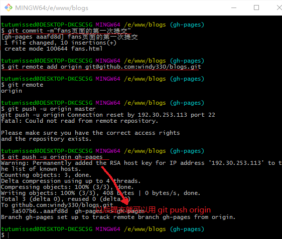

Git
- 在项目的根目录初始化一个仓库： git init
- 查看项目目录： ls
- 查看隐藏的.git目录： ls -a
.git文件夹就是本地仓库
正确的提交方式是先pull再push,防止远端有文件而本地没有该文件而提交不上
配置用户信息
- 配置用户名: git config user.name "testName"
- 配置邮箱: git config user.email "test@sina.com"
- 查看配置好的用户信息： git config --list
提交代码
- 从当前目录add: git add ./xxx.xxx
- commit到本地仓库: git commit -m "我们写的代码"
- 检查有没有需要提交的代码: git status 关键词： modified->修改 （ps:红色表示没有提交到暂存区 绿色表示没有提交到仓库） working directory clean 工作目录干净的 不需要提交的
添加当前目录下修改或添加的的所有文件到暂存区add: git add .
add commite合并: git commit -a -m "合并提交"
设置提交时忽略的文件
- 创建.gitignore文件
- 添加要忽略的文件当前目录下的路径： /xxx.xxx
查看日志 比对文件差异
- 查看日志： git log （简洁形式：git log --oneline）
- 比对文件差异：git diff 版本号1 版本号2 被比对的文件路径
版本回退
- 回退到上次提交：git reset --hard Head （上上次提交 git reset --hard Head~1）
- 按版本号回退： git reset --hard 版本号
查看之前每次操作
git reflog (ps: 结合版本回退就可以方便的回退到之前的任意一个版本)
head指向哪个版本，该版本就是你上次提交的版本，也就是你将在上面修改代码的版本
分支
- 创建分支： git branch xxx
- 查看现在所有分支，星号标记的是当前所在的分支： git branch
- 切换分支： git checkout xxx
- 切换到主分支再合并： git merge xxx
- 然后push到github，合并完成
- 删除分支： git branch -d xxx

冲突处理
关键词： conflict
手动删除冲突的代码再次提交
github
- new repository
- https链接
- 上传代码到git服务器： git push https链接 master
- 填写github的账号密码
- ginthub项目里点击注释，可以比较前后两个版本 关键词： fatal：提交失败
远程
- 远程： git remote add origin https//xxxx
- 查看远程： git remote
- 第一次提交： git push -u origin master
- 建立了联系以后的提交： git push origin
